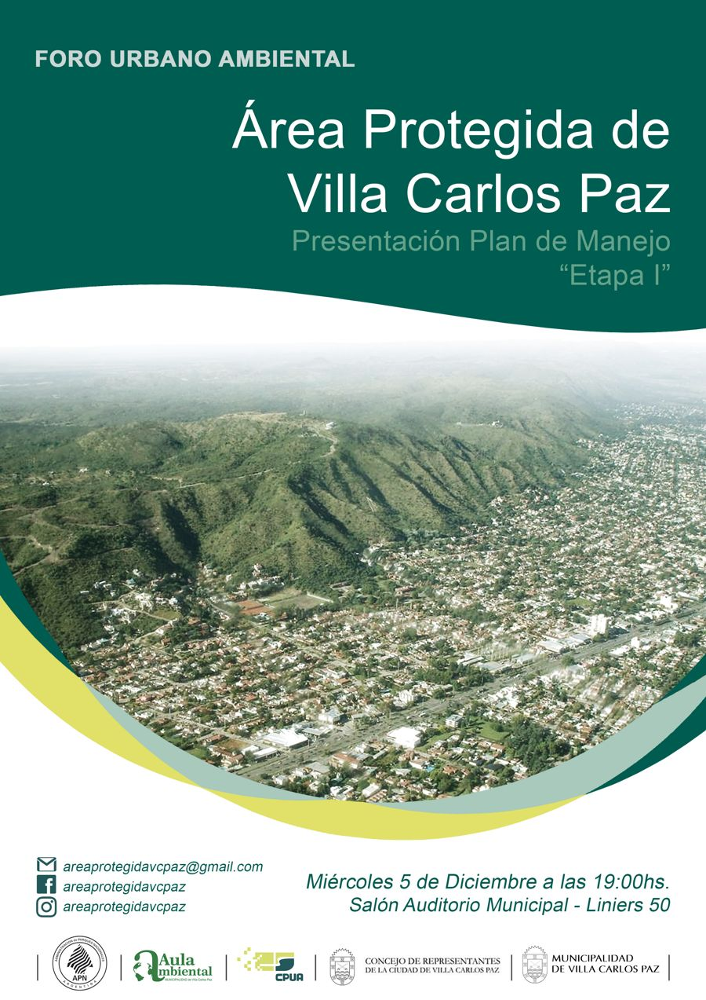

Inicio / Área Protegida
MAP · Comisión Asesora del Plan de Manejo del Área Protegida AP1
Depende y desarrolla sus actividades en el ámbito del Consejo de Planificación Urbano Ambiental.
Conformación
¿Quiénes integran la MAP?
- La Unidad Técnica del CPUA.
- El responsable del Área Plan de Manejo.
- Un representante de la Administración de Parques Nacionales (APN), Intendencia Parque Nacional Quebrada del Condorito.
- Técnicos especialistas a cargo de los distintos programas del Plan de Manejo, como el Programa de Educación Ambiental y Difusión y el Programa de Conservación del Área Protegida, entre otros.

Funciones
Funciones de la Comisión Asesora (MAP)
- Elaborar la segunda etapa del Plan de Manejo del AP1, definiendo programas, proyectos, el plan de evaluación y seguimiento, y los recursos necesarios para su desarrollo.
- Dictaminar sobre los planes de manejo de los proyectos presentados.
- Gestionar interjurisdiccionalmente el manejo de las áreas de protección, buscando la continuidad del AP1 en la microrregión de Villa Carlos Paz.
- Gestionar ante la Dirección de Obras Privadas el control de la ocupación de las distintas zonas del Área Protegida.
- Coordinar los procesos participativos para la toma de decisiones sobre el Área Protegida.
- Promover la conservación del ambiente del Área Protegida y los proyectos que de ésta se deriven según lo pautado en el Plan de Manejo.
- Promover la educación ambiental y la difusión del valor paisajístico, geológico y el legado histórico del Área Protegida.
- Realizar los estudios técnicos necesarios para el desarrollo de los programas del Plan de Manejo.
- Elevar a la Comisión Honoraria del CPUA las recomendaciones que surjan en su seno, para su elevación al Concejo de Representantes y/o al Departamento Ejecutivo según corresponda.
Recursos